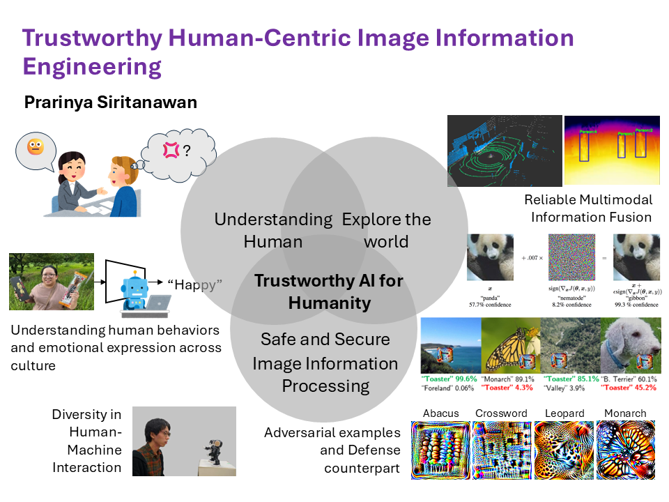

Research Overview
Shaping a Better World through Image Information Engineering.

Our laboratory advances Trustworthy Human-Centric Image Information Engineering. We study how visual and multimodal information can be analyzed, interpreted, and deployed in ways that remain useful to people while preserving reliability, safety, and human values.
Within this framework, our research is organized into a technical foundation, a human understanding layer, and a trustworthiness layer for modern AI systems, followed by application areas where these elements are integrated.
Key research areas include:
- Computer Vision and Image Understanding
- Affective Computing and Human Understanding
- Trustworthy, Secure, and Interactive AI
- Applications in health, education, and communication support
パリンヤー研究室では、「Trustworthy Human-Centric Image Information Engineering」という枠組みのもと、画像情報およびマルチモーダル情報を人のために信頼できる形で活用する研究に取り組んでいます。視覚情報をどのように解析し、どのように人間理解へ結び付け、さらにどのように安全かつ責任ある形で社会実装するかを一体として考えています。
本研究室の研究は、画像を扱うための技術基盤、人の感情や行動を理解するための人間理解層、そして現代的なAIシステムの信頼性・安全性・対話性を支える層、という役割の異なる三つの研究領域を中心に構成されています。その上で、それらを健康支援、教育支援、コミュニケーション支援へと応用しています。
主な研究分野：
- コンピュータビジョンと画像理解
- 感情コンピューティングと人間理解
- 信頼性・安全性・対話性を備えたAI
- 健康支援・教育支援・コミュニケーション支援への応用
Research Topics
Computer Vision and Image Understanding
We develop core technologies for understanding images, video, and multimodal sensory data. Our work focuses on visual analysis, representation learning, sensing, measurement, and recognition, with an emphasis on real-world visual understanding.
Key aspects:
- 2D/3D Image Processing
- Vision-based sensing, measurement, and tracking
- Visual representation learning and feature extraction
- Image analysis and recognition
- Human visual perception and understanding
Affective Computing and Human Understanding
We explore how intelligent systems can understand human affect, behavior, and psychological states from facial expressions and other nonverbal signals. We are particularly interested in how emotional communication varies across people and cultures, and in developing AI systems that can interpret these signals more appropriately.
Key aspects:
- Facial expression and nonverbal behavior
- Multimodal sensing and analysis
- Individual and cultural diversity
- Social and emotional communication
- Affective Human-centered AI
Trustworthy, Secure, and Interactive AI
We examines how AI systems can be made reliable, safe, and trustworthy in real-world use. We study robustness, privacy, security, and responsible interaction in AI systems that combine vision, language, and multimodal information, including LLM-based and interactive settings.
Key aspects:
- Adversarial attack analysis, defense, and integrity assessment in AI systems
- Privacy and safety issues in human-centered multimodal AI
- Responsible design of interactive AI systems
Application Areas
Our research is applied to human-centered domains where computer vision, affective computing, and trustworthy AI come together in practice. These areas represent real-world contexts for developing, testing, and deploying visual AI technologies.
Health and Physiological Support
Respiratory measurement, physiological-state estimation, and visual sensing methods that support health-related understanding and assistance.
Learning and Educational Support
Educational feedback, lecture analysis, and AI-supported learning systems that help people understand, practice, and improve more effectively.
Communication and Social Support
Human-centered systems for communication assistance, multicultural understanding, and social interaction support in real-world settings.
Research Grants
Government Grants
2023-2026
科研費 若手 23K16925
JSPS KAKENHI Grant-in-Aid for Early-Career Scientists
Analysis of Emotional Expressions Beyond Borders using Image Information Processing
科研費 基盤（C）23K11950
JSPS KAKENHI Grant-in-Aid for Scientific Research (C)
Fundamental research for a non-invasive, home-use respiratory function diagnostic support system
Co-Is: Prarinya Siritanawan, Shinji Fukasawa
Institutional and Other Grants
2024
令和６年度 先端研究拠点形成支援（JAISTサイエンスハブ構築支援）
FY2024 JAIST Research Grant for Advanced Research Hub (JAIST Science Hub)
Co-Is: Toshiaki Aoki, Shinobu Hasegawa, Kiyoaki Shirai, Teeradaj Racharak, Prarinya Siritanawan, Proadpran Punyabukkana, Dittaya Wanvarie, Narit Hnoohom, Thanapon Noraset, Apichon Witayangkurn, Akkharawoot Takhom
令和６年度 萌芽的研究支援
FY2024 JAIST Research Grant (Fundamental Research)
Secured AI: Defending Against Adversarial Attacks in Modern Machine Learning and Image Analysis Systems
Co-Is: Razvan Flori Beuran, Karin Sumongkayothin
2023
令和5年度 萌芽的研究支援
FY2023 JAIST Research Grant (Fundamental Research)
Research on the Fundamental Visual Image Features of Adversarial Examples and the Defense Counterparts
Co-I: Kazunori Kotani
2022
令和４年度 萌芽的研究支援
FY2022 JAIST Research Grant (Fundamental Research)
Emotional Expression Analysis in a Multicultural Society
Co-Is: Kazunori Kotani, Shinobu Hasegawa, Teeradaj Racharak, Haruyuki Kojima
令和４年度 融合科学共同専攻における分野融合型研究支援
FY2022 Support for Transdisciplinary Research in Joint Degree Program
Emotional Cognition System Research Group
Principal Investigator (JAIST): Prarinya Siritanawan
2021
令和3年度 情報科学国際交流財団 (IISF) 研究者海外派遣助成
FY2021 IISF Grant for International Conference Participation
令和3年度 融合科学共同専攻における分野融合型研究支援
FY2021 Support for Transdisciplinary Research in Joint Degree Program
Emotional Cognition System Research Group
Principal Investigator (JAIST): Prarinya Siritanawan